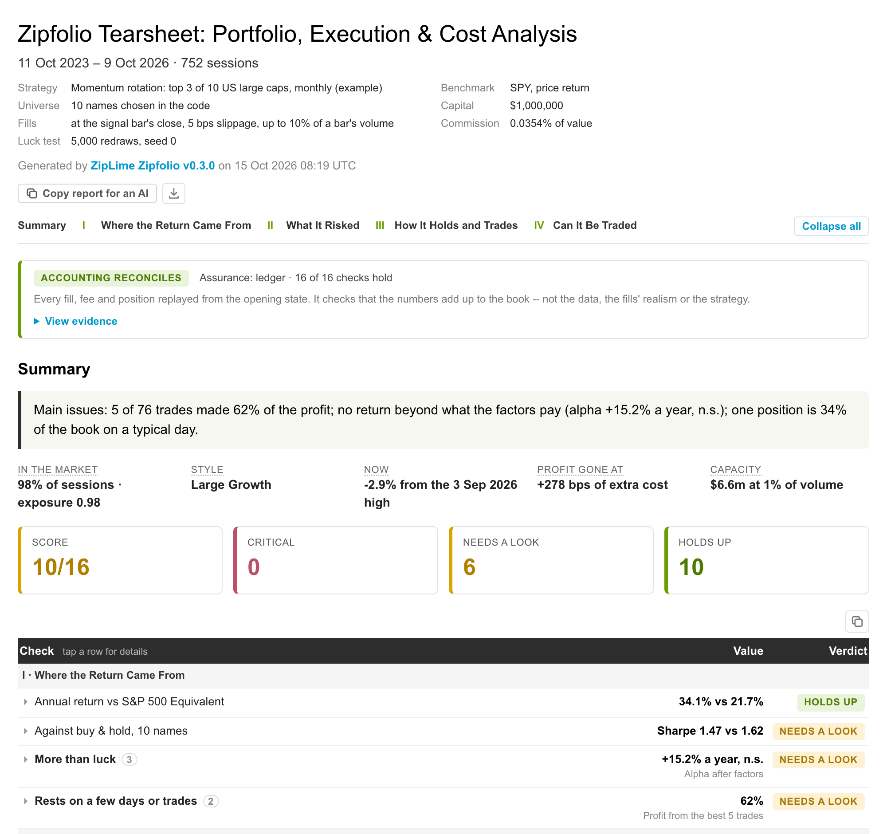

Zipfolio
Backtest tearsheets that read the book, not just the returns.
Each page below is a real Zipfolio report, built by zipfolio.build_tearsheet from a ziplime backtest. Every chart is live: hover it, zoom it, hide a series, open it full screen, save it as an image.
US momentum rotation
Top 3 of 10 US large caps, monthly, Oct 2023 – Oct 2026, $1m against SPY. All 17 sections.
Open the report →
Moscow momentum rotation
10 MOEX blue chips against IMOEX, in roubles: RUONIA as the risk-free rate, MOEX sector indices.
Open the report →
The same US backtest in QuantStats
QuantStats 0.0.86 on the same daily returns, for comparison.
Open the report →

pip install "zipfolio[all]" · github.com/Limex-com/zipfolio · Apache-2.0 · part of ZipLime